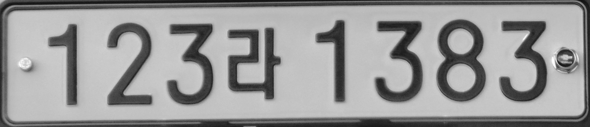
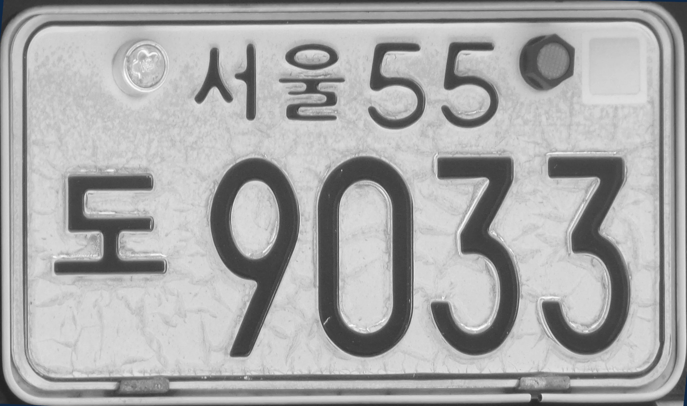
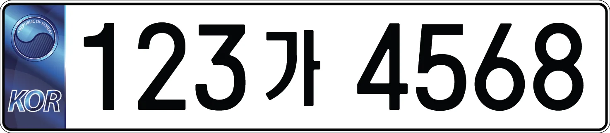
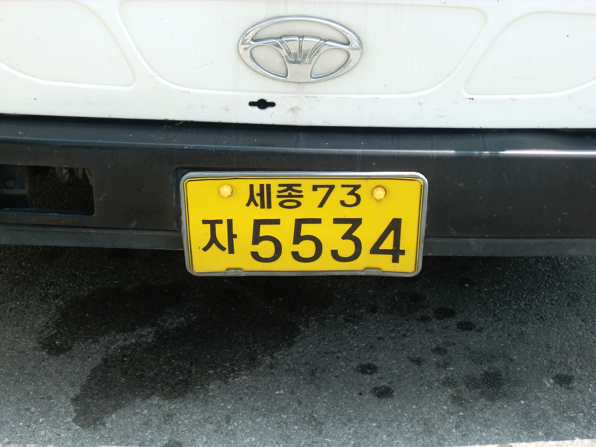
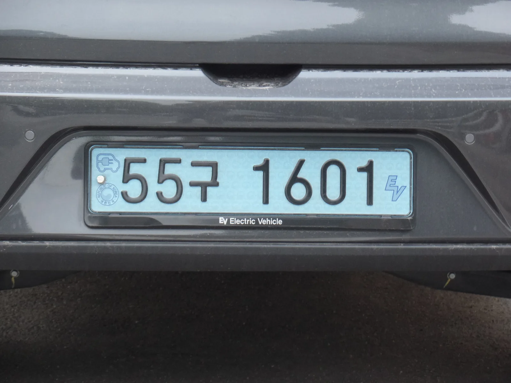

▲ ▲ 현재 쓰이는 자가용 번호판(2019년 도입 형식). 2026년 11월 28일부터는 반사성능·내구성 기준이 대폭 강화된 개선형 번호판이 새로 발급된다 ⓒ Jhcbs1019, Wikimedia Commons (CC BY-SA 4.0)
"분명히 있는 번호판인데 야간엔 왜 이렇게 안 보이지?" 비 오는 밤 뒤차 번호판을 읽으려 애써본 적이 있다면 이 질문에 공감할 것이다. 국토교통부가 이 문제에 손을 댔다. 필름식 번호판의 들뜸·박리 등 품질 불량과 야간 시인성 부족 민원이 반복되자, '자동차 등록번호판 등의 기준에 관한 고시'를 개정해 2026년 11월 28일부터 새 기준을 시행하기로 한 것이다. 핵심은 반사성능을 최대 6배 끌어올리고, 번호판에도 제조물처럼 보증기간과 생산정보를 명시하도록 한 것. 그렇다고 지금 달고 있는 번호판을 당장 바꿔야 하는 건 아니다. 무엇이 달라지고, 누가 영향을 받는지 정리했다.
1. 왜 지금 번호판 기준을 바꾸나 — 반복된 '불량 번호판' 민원

▲ 2003년식 구형 서울 자가용 번호판. 국내 번호판은 필름식 소재 채택 이후 들뜸·박리 등 품질 민원이 꾸준히 제기돼 왔다 ⓒ Jhcbs1019, Wikimedia Commons (CC BY-SA 4.0)
지금 대부분의 차량이 달고 있는 번호판은 알루미늄 원판에 반사 필름을 접착하는 '필름식'이다. 문제는 이 필름이 시간이 지나면 가장자리부터 들뜨거나 벗겨지고, 자외선과 온도 변화에 반사 성능이 떨어지는 경우가 적지 않았다는 점이다. 국토교통부와 한국교통안전공단이 필름식 번호판의 성능·품질 실태를 조사한 결과, 야간이나 우천 시 식별력이 기준치를 밑도는 사례가 확인됐다. 이에 국토부는 발급대행자(내마모성·방수성·문자 색상), 필름 제작자(반사성능·내후성·내충격성), 원판 제작자(재질·규격·접착력·내굽힘성) 등 제작 단계별로 시험 항목을 새로 규정하는 고시 개정안을 마련했다. 개정안은 2025년 11월 27일 발령됐고, 1년의 준비기간을 거쳐 2026년 11월 28일부터 시행된다.
2. 반사성능 6배, 내구성 기준도 대폭 강화

▲ 정부가 배포한 번호판 디자인 샘플(예시 번호). 이번 개정은 디자인이 아니라 반사 필름의 물리적 성능·내구성 기준을 바꾸는 것이 핵심이다 ⓒ 문화체육관광부, Wikimedia Commons (Public Domain)
가장 눈에 띄는 변화는 반사성능이다. 현재 기준은 3~12칸델라(cd)인데, 개선형 번호판은 20~30칸델라로 최대 6배까지 밝아진다. 칸델라는 빛의 세기를 나타내는 국제단위로, 수치가 높을수록 전조등이나 가로등 빛을 받았을 때 번호판이 더 뚜렷하게 반사되어 야간·우천 시 식별이 쉬워진다는 뜻이다. 내구성 시험 항목도 손질됐다. 필름 접착력은 영하 20℃ 조건을 유지한 뒤 18N(뉴턴)의 힘을 가해 떨어지지 않는지 확인하는 절차가 새로 생겼고, 내온도 시험 조건은 영하 20℃에서 영하 30℃로 더 혹독해졌다. 연료나 화학물질에 대한 저항성 시험은 침수 시간이 1분에서 1시간으로 60배 늘었다. 겨울철 혹한이나 동절기 부동액·연료 유출 상황에서도 번호판이 훼손되지 않도록 하기 위한 조치다.
3. 소비자 보호 강화 — 보증기간 5년 명문화, 생산정보 표시
지금까지는 번호판이 조기에 벗겨지거나 반사 기능이 떨어져도 '어디에 하자를 따져야 하는지'가 불분명했다. 개선형 번호판부터는 최초 발급일을 기준으로 5년의 보증기간이 명문화된다. 이 기간 안에 필름 박리나 반사 성능 저하 등 품질 문제가 생기면 제작 책임 소재를 따져 무상 교체를 요구할 근거가 뚜렷해지는 셈이다. 여기에 필름, 원판, 등록번호판 각각의 생산정보를 표시하는 것도 의무화된다. 번호판 뒷면이나 측면에 제조 이력이 남기 때문에, 향후 품질 문제가 발생했을 때 어느 공정에서 문제가 생겼는지 추적할 수 있게 된다. 제작 단계마다 책임 주체가 분산돼 있던 기존 구조에서, 최종 소비자가 하자를 주장하기 훨씬 쉬워지는 변화다.
4. 기존 차량 소유자가 알아야 할 것 — 교체 의무는 없다

▲ 사업용(영업용) 노란색 번호판이 실제 차량에 부착된 모습. 이번 개선형 기준은 승용·상용·사업용 번호판 모두에 적용되지만, 이미 발급받은 번호판을 바꿔야 하는 것은 아니다 ⓒ Hyolee2, Wikimedia Commons (CC BY-SA 3.0)
가장 많이 헷갈리는 부분이다. 결론부터 말하면 기존에 발급받은 번호판을 개선형으로 의무 교체해야 하는 규정은 없다. 이번 고시 개정은 앞으로 새로 만들어지는 번호판의 '제작 기준'을 바꾸는 것이지, 이미 도로 위에 붙어 있는 수천만 개 번호판을 일괄 회수·교체하겠다는 조치가 아니다. 다만 국토교통부는 번호판이 재료적 한계로 영구히 쓸 수 있는 것은 아니어서, 사용 환경에 따라 대체로 7~10년 주기로 교체하는 것이 바람직하다고 안내하고 있다. 즉 지금 당장 손댈 필요는 없지만, 번호판 색이 바래거나 반사 필름이 들뜨기 시작했다면 개선형 기준으로 새로 발급받는 선택지를 고려해볼 만하다. 자진 교체를 원한다면 관할 구청·시청 차량등록기관에서 신청할 수 있다.

▲ 전기차용 하늘색 친환경 번호판이 차량 뒷범퍼에 실제로 장착된 모습. 번호판은 차종·용도별로 색상과 디자인이 다르지만, 이번 개정으로 반사성능·내구성 기준은 모든 종류에 동일하게 강화 적용된다 ⓒ Jhcbs1019, Wikimedia Commons (CC BY-SA 4.0)
번호판을 새로 발급받거나 재발급받을 때 드는 비용도 궁금한 대목이다. 자동차관리법 시행규칙이 정한 번호판 발급 수수료는 차종과 재질에 따라 차등 적용되는데, 통상 경·소형 승용차는 1만 원 안팎, 중형은 1만 원대 중반, 대형이나 사업용은 이보다 높은 수준이며, 필름식 번호판은 별도 재질 특성상 수수료가 더 책정된다. 여기에 번호판을 떼었다 다시 붙이는 봉인·탈부착 비용이 별도로 추가되는 경우가 많으므로, 정확한 금액은 관할 차량등록사업소나 자동차민원 대국민포털(www.car.go.kr)에서 확인하는 것이 정확하다. 번호판이 사고나 부식으로 훼손됐다면 훼손된 실물 번호판을 가지고 등록사업소를 직접 방문해 반납·재발급을 신청해야 하며, 위조·변조가 의심되거나 도난·분실된 경우에는 온라인 신청이 불가능하고 경찰서에서 발급받은 도난(분실)신고확인서를 첨부해 방문 신청해야 한다. 특히 위조 번호판을 달고 운행하다 적발되면 자동차관리법에 따라 형사처벌 대상이 될 수 있으므로, 번호판에 흠집이나 오염이 심해 식별이 어려워진 경우 방치하지 말고 재발급 절차를 밟는 것이 안전하다.
한국미디어창업뉴스에서 개정 고시 내용 확인5. 신차 구매 예정자가 알아야 할 것 — 신규 등록부터 새 기준 적용
2026년 11월 28일 이후 신규 등록하는 차량, 그리고 번호판을 새로 발급·재발급받는 차량은 자동으로 개선형 번호판을 달게 된다. 신차를 이 시점 전후로 출고받을 계획이라면 별도로 신청하거나 비용을 추가로 낼 필요 없이 강화된 기준의 번호판이 기본 적용된다고 보면 된다. 오히려 소비자 입장에서는 반가운 변화에 가깝다. 같은 값에 야간 시인성이 더 좋고, 5년 보증까지 명문화된 번호판을 받게 되기 때문이다. 다만 시행일 직전에 등록하는 차량은 구형 기준 번호판이 발급될 가능성도 있으므로, 등록 시점이 애매하다면 관할 차량등록사업소에 미리 문의해보는 것이 확실하다.
엠투데이 원문 기사 보기6. 정리
체크포인트
- 개선형 번호판은 2026년 11월 28일부터 신규 등록·재발급 차량에 적용된다.
- 반사성능은 3~12칸델라 → 20~30칸델라로 최대 6배 강화된다.
- 번호판에도 최초 발급일 기준 5년 보증기간이 명문화되고, 생산정보 표시가 의무화된다.
- 기존 번호판은 교체 의무가 없다. 다만 국토부는 7~10년 주기 교체를 안내하고 있다.
- 신차를 구매한다면 별도 신청 없이 새 기준 번호판이 자동으로 발급된다.